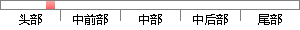

Photoshop所具有的功能包括：可以对图像进行修饰，对图形进行编辑，对图像的色彩进行处理等，此外，还有绘画和输出功能。
降重后句子
photoshop具有以下功能：图像修改、图形编辑、图像颜色处理等。此外，它还具有绘制和输出功能。
片段位置图

相似结果|
相似片段 1：绘制、编辑功能强大，尺寸标注便易准确，是日用陶瓷设计、制作的理想软件。在本案中主要承担着咖啡具的造型设计工作。Photoshop是图像处理和编辑软件，高版本有一定矢量图形处理功能，具有多种色彩模式，色彩
|
※ 片段修改建议 ※
近似词参考：- 具有：具备 拥有
- 以下：如下 下列
- 功能：功效
- 图像：图象
- 修改：点窜
- 编辑：编纂
- 图像：图象
- 颜色：色彩
- 处理：处置 处置惩罚
- 此外：另外 别的
- 具有：具备 拥有
- 功能：功效
系统自动生成语句：photoshop具备如下功效：图象点窜、图形编纂、图象色彩处置等。另外，它还具备绘制和输出功效。
注：本片段修改建议为系统自动生成，仅供参考。